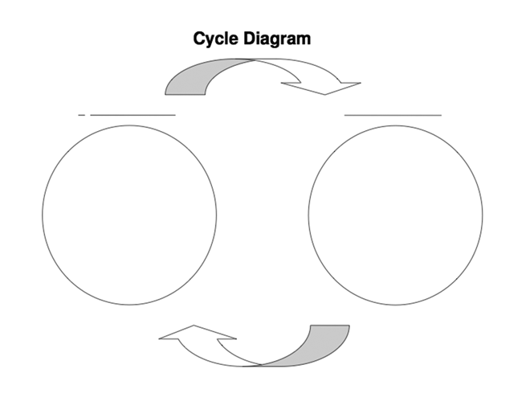
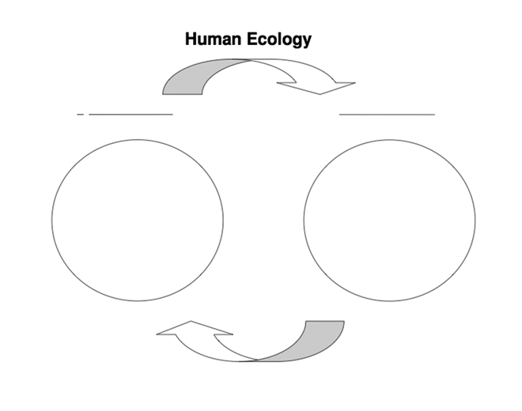
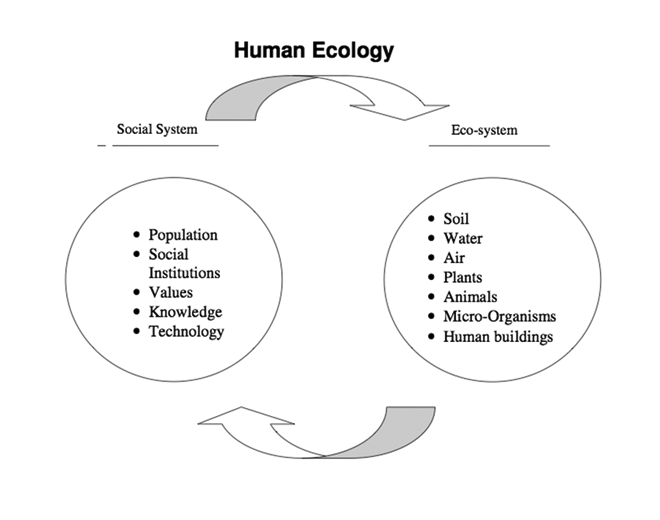
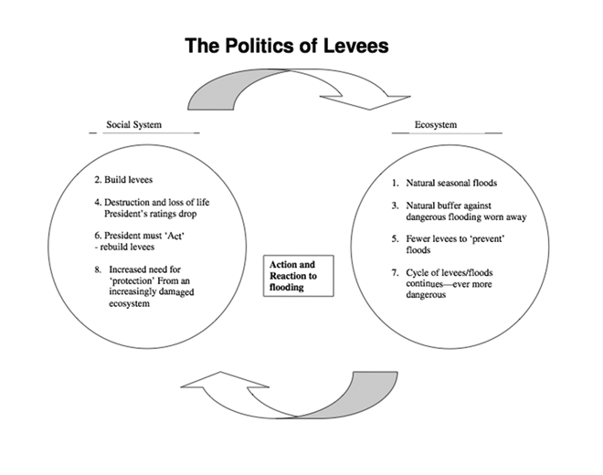
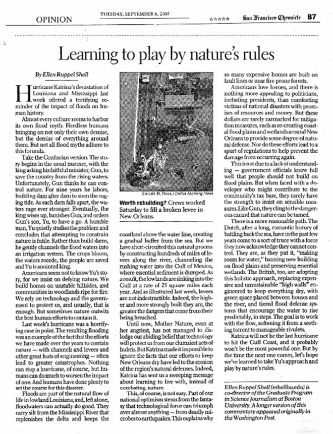
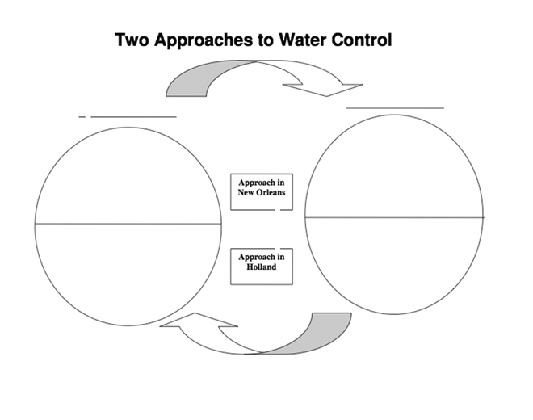
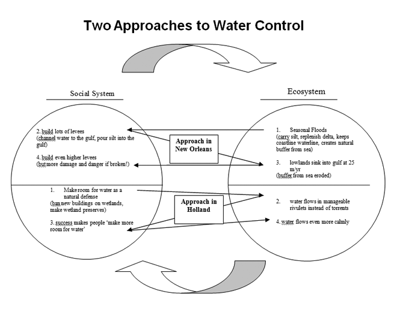

Learning to Play by Nature’s Rules
- Teacher: Julie Marten
- Download Curriculum
Overview:
This lesson teaches students how to recognize vicious and virtuous cycles, and then uses a news article about Hurricane Katrina to learn how to diagram the cyclical relationship between ecosystems and social systems. They will differentiate between approaches to water control taken in the United States and new policies developed in Holland called ‘making room for water.’ This lesson is suitable for any level of high school social studies, and is particularly suitable in the context of Geography, U.S. History, and Government courses.
Suggested Procedure:
- Introduce the idea of cycles to students. Most students recognize the example of a vicious cycle that can develop when a frustrated mother is with a cranky toddler. Asking students what happens if the toddler starts to fuss, cry, scream, usually leads to description of an escalating vicious cycle in which both parties become more upset and upsetting. A virtuous cycle is likewise easily understood by asking student what happens in a relationship when people extend each other warmth and trust. Once students understand the concept of a cycle, use the cycle diagram (below) to diagram another cycle they can identify.
- Give students the diagram Human Ecology (below), and use the key (below) to have them label the social systems and ecosystems and fill in the key elements of social and ecosystems.
- Give students a brief description of the devastation experienced during Hurricane Katrina. Pass out a copy of the Diagram ‘The Politics of Levees’ (below), and walk through the cycle that occurred between the social and ecosystems during the crisis of Hurricane Katrina. Students can draw a line connecting each action and reaction. This front-loading activity will help them understand the news article they read in the next step.
- Pass out the news article "Learning to Play by Nature’s Rules" (below) and a copy of the Diagram "Two Approaches to Water Control" (below). After reading the article, students should use the top of the diagram to map out four actions and reactions in the vicious cycle that took place in New Orleans, and the bottom half to map out four actions and reactions that take place in the virtuous cycle of making room for water in Holland.
- An extended activity would be to go online to research how water control policies have evolved in these two places since Hurricane Katrina.
Materials:
Below you can find the following documents for use with this lesson.
- Cycle Diagram
- Human Ecology Diagram
- Human Ecology Key
- The Politics of Levees
- Learning to Play by Nature’s Rules
- Two Approaches to Water Control
- Two Approaches to Water Control Key
Cycle Diagram

Human Ecology Diagram

Human Ecology Key

The Politics of Levees

Learning to Play by Nature’s Rules

Two Approaches to Water Control

Two Approaches to Water Control Key
